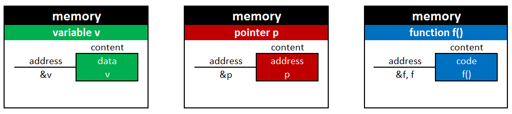
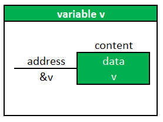
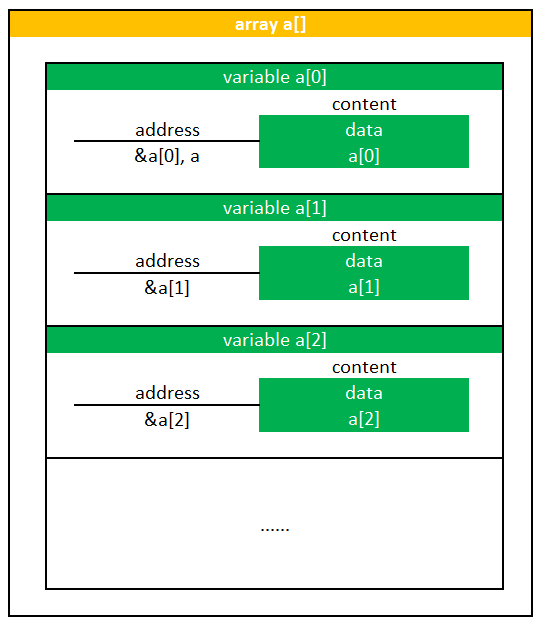
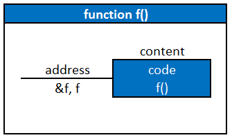
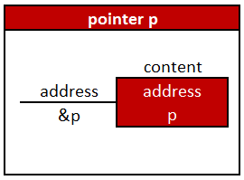
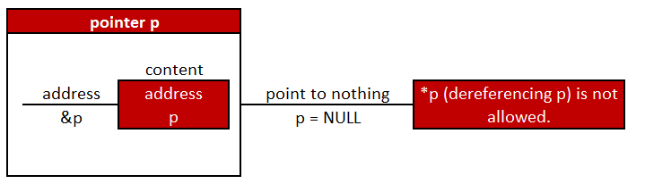
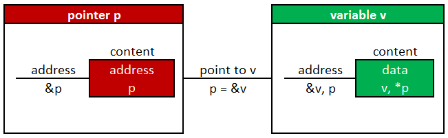
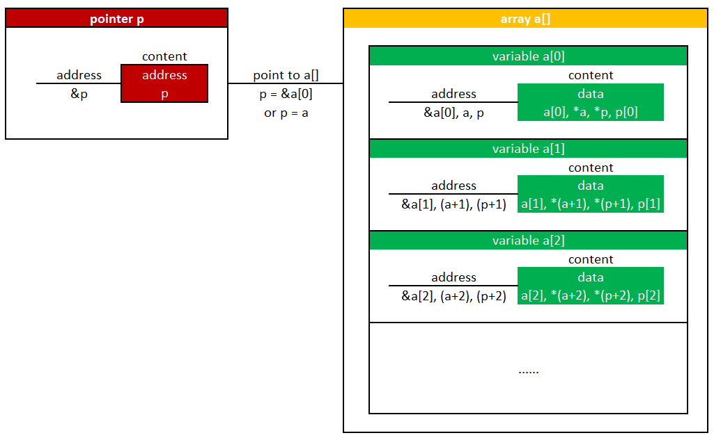
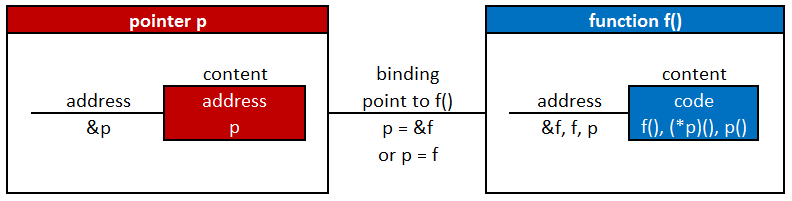
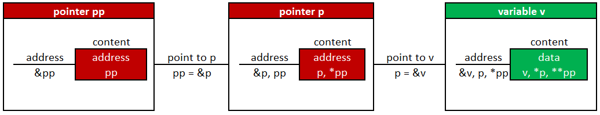

Memory Address and Content

Memory is used to store data, address, and code.
- data: variable, array, structure, string, ...
- address: pointer which points to data or functions
- code: function
Variable

If v is a normal variable, &v is the address of v and v is the content of v.
&vis fixed.vis changeable.- It's obvious that
&vandvare different. - It's confusing that
vis the name of a variable and its content.
Data - Array

If a[i] is a variable in an array a[], &a[i] is the address of a[i] and a[i] is the content of a[i].
a[i]is a variable.&a[i]is its address, anda[i]is its content.ais also the address of a[0], soaand&a[0]can be used interchangeably.- However, it is convenient but confusing if we use
ainstead of&a[0]. - When coding, there is a trade-off between
aand&a[] &a[]: logical, easy to understanda: simple, compact, and concise, but confusing
Code - Function

If f() is a function, &f is the address of f(), and the content of f() is code.
- It's confusing that both
fand&fare the address of f().
Address - Pointer

If p is a pointer variable, &p is the address of p and p is the content of p.
- both a normal variable and a pointer variable are variables.
- the difference between a normal variable
vand a pointer variablepis thatpneeds a target. pis the address of the target.*pis the content of the target&pis fixed,pis changeable, and*pis changeable.
Pointer to Nothing

Pointer to Variable

Pointer to Array

Pointer to Function

Pointer to Pointer to Variable
